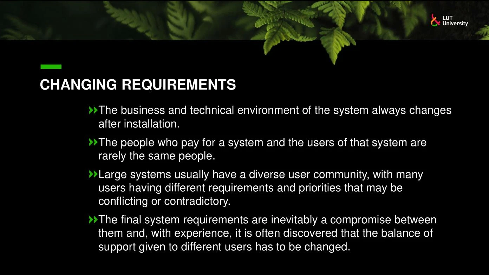
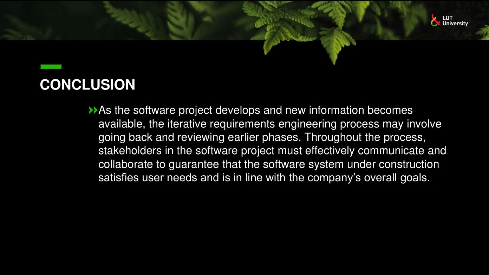

CT60A4050 软件工程基础 · 第 04 / 14 讲
第 4 讲 · 需求工程
Requirements Engineering
所属章节：第 2 章 需求、建模与架构
资料来源 · 1 项 / 已附 0 项
11_Week 5/1_SE - Lecture 4 - 2026.pdf未附原文件
未附文件仅列原始名称；版本与核对日期由维护者登记。
本节定位
需求工程是整门课最「贵」的一讲：课件给出一个量化结论——交付后再修一个需求错误的成本，可能是修一个实现错误的 100 倍。因此这一讲不只是概念，而是一套「把错误挡在编码之前」的方法：如何找对人、如何问出真需求、如何写得可验证、如何验证写对了、如何管理后续变更。
与前后的衔接：第 3 讲把「规格」列为四项活动之一，本讲把它展开；第 5 讲的建模（用例图、顺序图）是需求表达的工具；第 13 讲的课程项目正是产出一份需求规格说明书，本讲与第 12 讲的写作规范直接服务于它。
学完本节你应当能够：
- 区分用户需求与系统需求，并说明两类文档的读者差异
- 把一条需求正确归类为功能需求、非功能需求或领域需求
- 把一个模糊的「目标（goal）」改写成可验证的非功能需求
- 为给定项目设计访谈与观察（民族志）方案，并指出访谈的三个典型问题
- 对一份需求规格做五维检查（validity, consistency, completeness, realism, verifiability）
- 描述需求变更管理的三个阶段，并说明可追溯性在其中的作用
4.1 需求工程是什么
课件定义：“The process of establishing the services that a customer requires from a system and the constraints under which the system operates and developed.”（确立客户需要系统提供哪些服务，以及系统运行与开发所受约束的过程。）而在该过程中产生的「系统服务的描述与约束」，就是系统需求（system requirements）。
课件另给一个更工程化的定义：需求工程是在系统设计的每个阶段对需求进行形式化与定义的过程，包括客户需求、设计需求与测试需求；它是对软件系统需求进行定义、创建与验证的系统而严格的方法，目的是确保软件满足用户需要，并按时、按预算、按质量交付。
4.2 一条需求可以有多抽象
课件指出：需求可以是「高层抽象的服务陈述或系统约束」，也可以是「详细的数学化功能规格」。这不是失误，而是因为需求有双重功能：
- 它可能是投标的基础——因此必须开放给不同承包商作不同解释；
- 它可能是合同本身的基础——因此必须被详细定义；
- 这两种陈述都叫「需求」。
Davis 的经典表述把这件事说透了：
“If a company wishes to let a contract for a large software development project, it must define its needs in a sufficiently abstract way that a solution is not pre-defined … Once a contract has been awarded, the contractor must write a system definition for the client in more detail so that the client understands and can validate what the software will do. Both of these documents may be called the requirements document for the system.”（若公司要为大型项目招标，必须以足够抽象的方式定义需求，使方案不被预先锁定……中标后，承包方必须为客户写出更详细的系统定义，使客户理解并能验证软件将做什么。这两份文件都可以称为该系统的需求文档。）
这段话解释了为什么同一项目会有「招标用需求」与「合同用需求」两套文本，也解释了为什么第 13 讲的项目模板要求「需求要可验收」——课程项目模拟的是合同后的详细规格。
4.3 用户需求与系统需求
| 类型 | 英文定义 | 读者 | 形式 |
|---|---|---|---|
| 用户需求 user requirements | Statements in natural language plus diagrams of the services the system provides and its operational constraints. Written for customers. | 客户、最终用户、业务方 | 自然语言 + 图，避免技术细节 |
| 系统需求 system requirements | A structured document setting out detailed descriptions of the system’s functions, services and operational constraints. Defines what should be implemented so may be part of a contract. | 开发者、测试、架构师、合同方 | 结构化文档，含详细功能与非功能约束 |
课件用一张「不同需求类型的读者」图说明：用户需求写给客户看，系统需求写给技术方看，两者不能混写。混写的典型后果是「客户看不懂技术条款，开发看不懂业务意图」。
4.4 干系人
干系人定义：“Any person or organization who is affected by the system in some way and so who has a legitimate interest.”（以某种方式受系统影响、因而具有正当利益的任何个人或组织。）课件列了四类：最终用户（end users）、系统管理者（system managers）、系统所有者（system owners）、外部干系人（external stakeholders）。
4.5 敏捷与需求
课件如实呈现了敏捷对需求的挑战：许多敏捷方法认为「产出详细系统需求是浪费时间」，因为需求变化太快，需求文档总是过时；敏捷通常采用增量式需求工程，用「用户故事」表达需求。这对业务系统是实用的，但对「需要交付前分析的系统」或「多个团队共同开发的系统」是有问题的。
为什么有问题？因为交付前分析（如安全关键系统的危害分析）必须在实现前完成；多团队开发需要共享的、稳定的接口定义。用户故事粒度太小、太口语化，无法承担这两类任务。这一点在第 12 讲 Sasken 案例（客户要求「完整产品」而非「增量故事」）中会具体呈现。
4.6 功能需求、非功能需求、领域需求
| 类型 | 英文定义 | 例子 |
|---|---|---|
| 功能需求 functional requirements | Statements of services the system should provide, how the system should react to particular inputs and how the system should behave. May state what the system should not do. | 系统应向用户开具发票；系统应拒绝超过信用额度的订单 |
| 非功能需求 non-functional requirements | Constraints on the services or functions offered by the system such as timing constraints, constraints on the development process, standards. Often apply to the system as a whole rather than individual features. | 响应时间不超过 2 秒；必须使用公司指定的 IDE；须符合 WCAG 2.1 AA |
| 领域需求 domain requirements | Constraints on the system from the domain of operation. | 医疗系统须符合病历保存年限法规；航空系统须符合 ARINC 653 分区要求 |
功能需求的细节：它描述功能或系统服务，取决于软件类型、预期用户、系统使用场景；功能性的用户需求可以是高层陈述（「系统应支持排班」），但功能性的系统需求必须详细描述服务（「系统应在 3 秒内为 200 名护士生成满足最大连续工时 5 小时的排班，冲突时给出替代方案」）。
4.7 完整性与一致性：原则上要求，实践中做不到
课件明确：原则上需求应既完整（complete，包含所有需要设施的说明）又一致（consistent，设施描述之间无冲突或矛盾）。但实践中，由于系统与环境的复杂性，不可能产出完整且一致的需求文档。
这句话的考试价值在于：它解释了为什么需求管理（4.13）是必需的，也解释了为什么「需求文档必须完美才能开工」是伪命题。工程答案是：接受不完整，但用可追溯性与变更控制来管理不完整。
4.8 非功能需求为什么更关键
非功能需求定义系统属性与约束（响应时间、存储要求、I/O 设备能力、系统表示等）；过程需求也可被规定（指定 IDE、编程语言或开发方法）。课件给出一个强判断：非功能需求可能比功能需求更关键；若不满足，系统可能变得无用。
原因是功能可以被绕过，而非功能不能。用户发现少了某个功能，会用 Excel 补上；但系统不可靠或太慢，用户就完全无法达成目标（第 10 讲会以「主观质量主要由非功能特性决定」再次论证）。
非功能需求对架构的影响：它们往往影响整体体系结构而非单个构件。例如为满足性能要求，你可能必须把系统组织成「最小化构件间通信」的形式。此外，一条非功能需求（如安全需求）可能派生出一批功能需求（需要哪些服务来实现安全），也可能限制既有需求（某些功能因安全策略被禁止）。
非功能需求的三种分类：
| 分类 | 英文 | 含义 | 例子 |
|---|---|---|---|
| 产品需求 | product requirements | 规定交付的产品必须以某种方式表现 | 响应时间、可用性、内存占用 |
| 组织需求 | organisational requirements | 源于组织的政策与流程 | 必须使用公司指定的开发流程与工具、必须遵循文档模板 |
| 外部需求 | external requirements | 源于系统及其开发过程之外的因素 | 法规、会计标准、互操作标准 |
4.9 目标与可验证需求
非功能需求很难精确陈述，不精确的需求难以验证。课件区分两个词：
- 目标 goal：用户的总体意图，如「易用」。
- 可验证的非功能需求 verifiable non-functional requirement：使用某种可被客观测试的度量来陈述。
目标是开发者理解用户意图的有用信息，但不能作为验收标准。改写方法：给目标加上「度量 + 条件 + 判定阈值」。例如「易用」→「新用户在无培训情况下，5 分钟内完成首次下单，成功率 ≥ 90%（可用性测试，n ≥ 20）」。
4.10 需求工程的四个通用活动
不同应用领域、不同人员、不同组织的过程差异很大，但所有过程都有若干通用活动：需求获取（elicitation）、需求分析（analysis）、需求验证（validation）、需求管理（management）。实践中它们是迭代交织的，课件用「需求工程过程的螺旋视图」表示：每一圈都从获取开始，经分析、规格，再进入下一轮。
4.11 需求获取与分析
获取（elicitation，也叫 requirements discovery）指技术人员与客户合作，了解应用领域、系统应提供哪些服务、系统的运行约束。参与者可能包括最终用户、管理者、维护工程师、领域专家、工会等。
五个典型问题（高频考点）：
- 干系人并不知道自己真正想要什么；
- 干系人用自己的术语表达需求；
- 不同干系人的需求可能相互冲突；
- 组织与政治因素会影响系统需求；
- 需求在分析过程中还会变化——新干系人出现、业务环境变化。
获取过程的四个活动：
| 活动 | 英文 | 做什么 |
|---|---|---|
| 需求发现 | requirements discovery | 与干系人互动，发现其需求；领域需求也在此阶段被发现 |
| 分类与组织 | requirements classification and organisation | 把相关需求分组，组织成连贯的簇 |
| 排优先级与协商 | prioritisation and negotiation | 排定优先级，解决需求冲突 |
| 需求规格 | requirements specification | 把需求文档化，并输入螺旋的下一轮 |
4.12 获取技术：访谈、民族志、场景
访谈（interviewing）是最常用的技术。类型有二：封闭式（closed，基于预先确定的问题清单）与开放式（open，与干系人自由探讨各种议题）。实践中通常是二者的混合。
访谈的实践要点：适合获得「干系人做什么、如何与系统交互」的总体理解；访谈者必须不带先入之见；要主动用「建议某些需求」的方式引导用户开口，而不是只问「你想要什么」——因为用户往往说不出抽象需求，但能对具体建议作出反应。
访谈的三个问题：领域专家使用的语言，需求工程师听不懂；访谈不适合获取领域需求——工程师不理解专业术语，而有些领域知识太熟悉，人们觉得「不值得说」或根本说不出来。
民族志（ethnography）：社会科学家花相当长时间观察并分析人们实际如何工作。优点是人们不必解释或陈述自己的工作；能观察到重要的社会与组织因素；研究表明实际工作总比简单系统模型所暗示的更丰富、更复杂。
民族志能发现两类需求：来自「人们实际怎么做」（而非流程文件说应该怎么做）的需求；来自「协作与对他人活动的感知」（awareness）的需求——知道别人在做什么，会改变我们做事的顺序与方式。
局限：民族志适合理解现有过程，无法识别应该新增哪些功能。补救办法是聚焦民族志（focused ethnography）：把民族志与原型结合——原型开发产生的未解问题，正好聚焦民族志分析的方向。另一个问题是它研究的是既有实践，而这些实践可能有已失去意义的历史包袱。
故事与场景（stories and scenarios）：场景与用户故事是「系统如何被使用」的真实例子；因为它们基于具体情境，干系人能把自己代入并评论。
场景是用户故事的结构化形式，应包含五要素：
- 起始情境的描述（starting situation）；
- 正常事件流的描述（normal flow of events）；
- 可能出什么错的描述（what can go wrong）；
- 其他并发活动的信息（concurrent activities）；
- 场景结束时状态的描述（state when the scenario finishes）。
4.13 需求规格：怎么写
规格是把用户需求与系统需求写进需求文档的过程。用户需求必须让没有技术背景的最终用户与客户看懂；系统需求更详细、可含更多技术信息；需求可能是开发合同的一部分，因此必须尽可能完整。
五种表示法（课件表格）：
| 表示法 | 说明 | 适用与局限 |
|---|---|---|
| 自然语言 natural language | 用编号句子书写，每句表达一条需求 | 表达力强、直观、通用；但易歧义 |
| 结构化自然语言 structured natural language | 在标准表单或模板上书写，每个字段提供需求某一方面的信息 | 一致性较好；对业务需求有时过于僵化 |
| 设计描述语言 design description languages | 类似编程语言但更抽象，通过定义系统的操作模型来规定需求 | 现在很少使用；对接口规格仍有用 |
| 图形表示 graphical notations | 图形模型 + 文字注释定义功能需求；常用 UML 用例图与顺序图 | 直观、便于沟通；细节需文字补充 |
| 数学规格 mathematical specifications | 基于有限状态机、集合等数学概念 | 无歧义、可减少需求文档中的模糊；但客户难懂，成本高 |
需求与设计不可分：原则上需求说「做什么」，设计说「怎么做」；实践中二者不可分——体系结构可能被设计用来组织需求；系统可能与其他系统互操作而产生设计需求；为满足非功能需求而选用特定架构可能本身就是领域需求；这些也可能来自监管要求。
自然语言规格的写作指南（课件五条，考试常考）：
- 发明一种标准格式，并对所有需求统一使用；
- 语言用法一致：shall 表示强制需求，should 表示期望需求；
- 用文本高亮标出需求的关键部分；
- 避免计算机行话；
- 为每条需求加入理由（rationale），说明它为什么必要。
结构化规格（structured specifications）：限制写作者的自由度，用标准方式书写需求。它对某些类型需求很有效，但对业务系统需求有时过于僵化。表单式规格（form-based）的字段包括：功能或实体的定义；输入及其来源；输出及其去向；计算所需信息及其他被使用的实体；要采取的动作；前置与后置条件（如适用）；函数的副作用（如有）。
4.14 用例（use cases）
用例是 UML 中的一种场景：它识别交互中的参与者（actors）并描述交互本身。一组用例应描述与系统的所有可能交互；形式是「高层图形模型 + 更详细的表格描述」；UML 顺序图可用于补充细节，展示系统中事件处理的顺序。
用例表的标准字段（第 13 讲项目模板完全采用这套字段）：ID、名称与版本、参与者、前置条件、描述、异常、结果、其他需求。第 12 讲的 EXCEED 与第 13 讲的示例项目都用这套表格。
4.15 软件需求文档
软件需求文档（SRS）是「对系统开发者所要求内容」的正式陈述；应同时包含用户需求的定义与系统需求的规格。
课件有一句加粗的警告：它不是设计文档。“It is NOT a design document. As far as possible, it should set out WHAT the system should do rather than HOW it should do it.”（它应尽可能说明系统该做什么，而不是怎么做。）
4.16 需求验证
验证关注「需求是否定义了客户真正想要的系统」。为什么重要？因为需求错误代价极高：交付后修一个需求错误，可能是修一个实现错误的 100 倍。
五维检查（必须能背）：
| 检查项 | 英文 | 问的问题 |
|---|---|---|
| 有效性 | Validity | 系统是否提供了最支持客户需要的功能？ |
| 一致性 | Consistency | 需求之间是否存在冲突？ |
| 完整性 | Completeness | 客户要求的所有功能是否都包含？ |
| 现实性 | Realism | 在给定预算与技术下，这些需求能实现吗？ |
| 可验证性 | Verifiability | 需求能被检查吗（是否有客观判据）？ |
三种验证技术：需求评审（对需求做系统的人工分析）、原型（用可执行模型检查需求）、测试用例生成（为需求开发测试，以检查其可测试性）。第三种最容易被忽略：写不出测试，说明需求不可验证。
4.17 需求变更与需求管理
需求必然变化，课件给了四个原因：系统安装后业务与技术环境总会变；付钱的人与使用的人很少是同一批人；大型系统用户群多样，需求与优先级可能冲突甚至矛盾；最终需求是折中，而经验表明「对不同用户的支持力度」常常需要重新平衡。
需求管理（requirements management）是在需求工程过程与系统开发过程中管理变化需求的过程。新需求会在开发中以及投入使用后出现。你需要：跟踪每条需求；维护依赖需求之间的链接（以便评估变更影响）；建立正式的变更提案流程，并把提案与系统需求关联。
变更管理的三个阶段：
- 问题分析与变更规格：分析问题或变更提案是否有效；把分析结果反馈给提出者，提出者可能给出更具体的提案，或撤回请求。
- 变更分析与成本核算：利用可追溯性信息（traceability）与对系统需求的一般知识评估变更影响；分析完成后，决定是否继续该变更。
- 变更实现：修改需求文档，必要时修改系统设计与实现。理想情况下文档的组织方式应使变更易于实施。
注意第一阶段与第二阶段的区别：第一阶段判断「这个变更请求是否成立」，第二阶段判断「实施它要付什么代价」。两者都通过才进入实现。
需求可以很抽象，也可以很详细，这不是失误而是双重功能：招标阶段要抽象到不锁定方案，中标后要详细到可验证，两者都叫需求文档，对应课程项目模拟的合同后详细规格。务必区分读者：用户需求写给客户，用自然语言加图；系统需求写给开发、测试与合同方，是结构化文档。干系人也不等于用户——出钱的所有者、运维的系统管理者、监管等外部干系人都有正当利益却未必直接使用系统。非功能需求常被忽视，却可能比功能需求更关键。
原版图页（源 PDF 插图页）







| English | 中文 | 说明 / 例句 |
|---|---|---|
| requirements engineering | 需求工程 | Establishing the services a customer requires and the constraints on operation and development. |
| system requirements | 系统需求 | A structured document with detailed descriptions of functions, services and constraints; may be part of a contract. |
| user requirements | 用户需求 | Natural language statements plus diagrams, written for customers. |
| functional requirement | 功能需求 | Services the system should provide and how it reacts to particular inputs. |
| non-functional requirement | 非功能需求 | Constraints on services or functions: timing, process, standards. |
| domain requirement | 领域需求 | Constraints derived from the domain of operation. |
| stakeholder | 干系人 | Any person or organisation affected by the system with a legitimate interest. |
| elicitation | 需求获取 | Technical staff working with customers to find out the domain, services and constraints. |
| ethnography | 民族志 | Observing how people actually work to discover requirements. |
| scenario | 场景 | A structured user story with starting situation, normal flow, what can go wrong, concurrent activities and final state. |
| use case | 用例 | A UML scenario identifying actors and the interaction itself. |
| requirements validation | 需求验证 | Demonstrating that the requirements define the system the customer really wants. |
| verifiability | 可验证性 | Whether a requirement can be checked objectively. |
| traceability | 可追溯性 | Links between requirements used to assess the impact of change. |
| requirements management | 需求管理 | Managing changing requirements during RE and development. |
| SRS | 软件需求规格说明书 | The official statement of what is required; WHAT, not HOW. |
情境：某医院预约系统的需求如下。① 患者可在 App 上选择科室、医生与时段并确认预约。② 系统在早 8:00–10:00 高峰期的预约请求响应时间不超过 1.5 秒（95 分位）。③ 系统须符合《电子病历管理规范》关于预约记录保存 15 年的要求。请分类并说明理由。
分析：先问「它约束的是行为还是属性」。① 描述系统提供什么服务、如何响应输入 → 功能需求。② 描述系统作为一个整体的性能约束 → 非功能需求（产品需求中的性能子类）。③ 约束来自医疗业务领域法规，不是用户提出也不是技术选择 → 领域需求。
进一步：② 是可验证的（有度量、有负载条件、有分位数）；如果把 ② 写成「系统应快速响应」，那就是目标（goal）而非可验证需求，验收时无法判定。
通用思路：功能需求看「做什么」，非功能需求看「多快、多稳、多安全、受什么流程约束」，领域需求看「这个行业的规则从哪来」。
情境：客户说「这个系统要非常好用，护士看一眼就会」。请改写为可验证的非功能需求，并说明验证方式。
解：第一步找可观测的量——「会用」可以操作化为「在无培训条件下完成核心任务的成功率与耗时」。第二步加条件——任务是什么、用户是谁、样本多大。第三步给阈值与判定方式。
改写结果：「在无培训条件下，20 名未使用过本系统的注册护士中，至少 18 名（90%）能在 3 分钟内完成『为一名患者改约到下周二下午』这一任务，且无需求助；测试在真实设备（10 英寸平板）上进行，采用可用性测试脚本，记录任务完成率与耗时。」
验证方式：可用性测试（形成性测试用于改进，总结性测试用于验收）；若未达标，则记录失败点并迭代界面。
注意：不要把它写成「界面应简洁美观」——那是目标，不是需求；也不要把实现方案（「用大按钮」）写进需求，那是设计。
情境：你要为某快递公司的分拣中心开发一套「异常件处理」系统。调度主管说「我们流程很标准，你按流程文档写就行」。请设计获取方案，并指出只做访谈会漏掉什么。
分析：「流程很标准」本身是风险信号——课件指出实际工作总比流程文档所暗示的更丰富。
方案：① 开放式访谈调度主管与一线分拣员，先问「昨天最难处理的一件是什么」，用具体事件代替抽象流程；② 封闭式访谈质控与 IT，核对异常代码表、系统接口与报表口径；③ 民族志观察一个完整班次（含交接班），记录实际动作、口头沟通、便签与临时表格；④ 用场景把观察到的典型情形写成五要素剧本，回读给分拣员确认；⑤ 用原型（异常件登记界面）做聚焦民族志，让操作员在真实节奏下试用。
只做访谈会漏掉：① 人们「说不出来」的隐性规则（例如某类破损件必须先拍照再上报，因为理赔需要）；② 协作与感知类需求（分拣员通过看邻台是否堆货来判断是否叫人）；③ 实际工作中的绕行做法（用纸单兜底）；④ 语言差异导致的误解（「滞留件」「疑难件」「问题件」在不同班组含义不同）。
结论：访谈拿「意图」，观察拿「事实」，场景拿「共识」，原型拿「反应」。四者组合才构成完整获取。
情境：需求文档中有三条：R1「系统应支持导出报表」；R2「所有报表导出必须在 1 秒内完成」；R3「报表格式须符合财政局 2024 年第 7 号文」。另有新提案「增加按科室维度导出」。请做验证检查，并分析变更影响。
验证：有效性——R1 未说明哪些报表、给谁用，无法判断是否支持客户需要；一致性——R2 的「1 秒」对「全量年度报表」可能不现实，与 R1 的范围模糊共同构成潜在冲突；完整性——缺「无数据时如何导出」「权限不足时如何处理」；现实性——R2 在现有数据库上可能不可达；可验证性——R2 可验证（有度量），但缺测量条件（数据量、并发数）。
变更影响：借助可追溯性，从「按科室维度导出」追溯到：报表生成服务（R1）、性能约束（R2，新增维度可能破坏 1 秒指标）、格式规范（R3，需确认新维度是否在规范允许的列范围内）、数据模型（是否已有科室字段与权限模型）。
结论：该提案技术上可行但会触碰 R2；应在变更分析阶段给出「新增维度后的性能实测」，再决定是放宽 R2 还是优化查询。这正是「变更分析与成本核算」阶段的作用。
- 用户需求与系统需求的区别是什么？各举一例。
- 判断：非功能需求只影响单个构件，不影响整体架构。（对/错，说明理由）
- 写出场景的五要素，并用其中三要素描述「患者在 App 上改约」的正常流程。
- 访谈为什么不适合获取领域需求？给出两种补救手段。
- 把「系统应安全」改写为两条可验证的非功能需求。
- 某需求在开发中期被提出变更。请按变更管理的三阶段写出你的处理步骤。
参考答案与思路
1. 用户需求用自然语言 + 图，写给客户看，避免技术细节（「护士应能在一个屏幕上看到本班次全部患者」）；系统需求是结构化文档，写给技术方，可含详细约束（「该屏幕在 200 名患者、10 英寸设备上首屏渲染 ≤ 800 ms」）。
2. 错。课件明确：非功能需求常影响整体体系结构而非单个构件，例如为满足性能须最小化构件间通信；一条安全需求还可能派生出一批功能需求。
3. 五要素：起始情境、正常事件流、可能出错之处、并发活动、结束状态。示例：起始——患者已登录且有一个未来 7 天内的预约；正常流——进入「我的预约」→ 选择该预约 → 点「改约」→ 选择新时段 → 确认；结束——旧预约被取消、新预约生成、双方收到通知。
4. 因为工程师不懂专业术语，且部分领域知识过于熟悉，从业者认为不值得说或说不清。补救：请领域专家参与并充当翻译；用民族志观察实际工作；用原型引出对具体方案的反应。
5. 例：「系统在检测到未授权访问尝试后 60 秒内锁定该账户并通知所有者」；「系统对静态存储的患者数据使用 AES-256 加密，密钥轮换周期不超过 90 天」。两条都有度量或可检查的机制。
6. ①问题分析与变更规格：确认提案是否成立、范围与验收标准，反馈给提出者；②变更分析与成本核算：用可追溯性找出受影响需求、设计、测试，估算工作量与风险，决定是否实施；③变更实现：更新需求文档与基线，同步修改设计、代码与测试用例，并记录变更日志。
写与查需求的清单
- 找全干系人：用户、管理者、所有者、外部（监管/工会/合作方）
- 选获取手段：访谈（意图）+ 观察（事实）+ 场景（共识）+ 原型（反应）
- 分类每条需求：功能 / 非功能（产品·组织·外部）/ 领域
- 把每个目标改写成可验证需求：度量 + 条件 + 阈值
- 写场景五要素，确保有异常路径与并发活动
- 用用例表写清参与者、前置条件、异常、结果
- 做五维验证：有效性、一致性、完整性、现实性、可验证性
- 为每条需求建立追溯链接（需求 ↔ 设计 ↔ 测试）
- 按「问题分析 → 变更分析 → 变更实现」三阶段处理变更，并记录基线
| 源文件 | 页码 | 覆盖知识点 |
|---|---|---|
| 11_Week 5/1_SE - Lecture 4 - 2026.pdf | p4–p9 | 需求工程定义、需求的双重功能、Davis 抽象论述、用户需求与系统需求、读者差异 |
| 11_Week 5/1_SE - Lecture 4 - 2026.pdf | p10–p12 | 干系人类型、敏捷与需求、功能/非功能/领域需求 |
| 11_Week 5/1_SE - Lecture 4 - 2026.pdf | p13–p19 | 功能需求细节、完整性与一致性、非功能需求的重要性与实现影响、三类分类、目标与可验证需求 |
| 11_Week 5/1_SE - Lecture 4 - 2026.pdf | p20–p34 | RE 四个活动、获取的五个问题、获取过程四活动、访谈与问题、民族志与聚焦民族志、故事与场景 |
| 11_Week 5/1_SE - Lecture 4 - 2026.pdf | p35–p42 | 需求规格、五种表示法、需求与设计不可分、自然语言规格与写作指南、结构化与表单式规格、用例 |
| 11_Week 5/1_SE - Lecture 4 - 2026.pdf | p43–p50 | SRS 定义与「不是设计文档」、需求验证与 100 倍成本、五维检查、三种验证技术、变更原因、需求管理与三阶段 |
| 11_Week 5/1_SE - Lecture 4 - 2026.pdf | p51–p52 | 结论与要点 |
| （跳过）11_Week 5/2_Exercise Sessions | 全篇 | Pearson 案例讨论说明页，案例本身已并入第 11 讲 |
| （补充） | — | 非功能需求的具体度量示例与指标写法属于应用性补充，不引入新考点 |